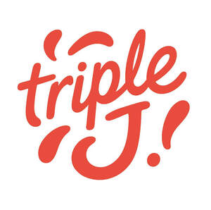

Trade Mark Journal No.2025/034 22 August 2025
UK00004247339 11 August 2025 (32,33,35)

- Class 32
- Beers; Non-alcoholic beverages; Mineral and aerated waters; Fruit beverages and fruit juices; Syrups for beverages; preparations for making non-alcoholic beverages; Energy drinks; soft drinks; Nutritionally fortified beverages. .
- Class 33
- Alcoholic beverages, except beers; Alcoholic preparations for making beverages; wines; sparkling wines.
- Class 35
- Advertising, marketing and promotional services; Administrative processing and organising of mail order services; Sales promotion; Retailing and wholesaling, Including via an online shop, via e-commerce platforms and Also via the Internet, in relation to the following goods: Alcoholic beverages of all kinds and Non-alcoholic beverages; Business management; Promotional presentations and Retailing and wholesaling and Sale on electronic sites accessed via computer networks in relation to the following goods: Alcoholic beverages of all kinds and Non-alcoholic beverages; Promotion of the following goods: Alcoholic and non-alcoholic drinks; Organisation of promotional events, in relation to the following fields: Product launches; Business advisory services relating to the establishment and operation of franchises; Online ordering for takeaway and delivery of restaurant and takeaway meals, arranging via websites; Online ordering services and By telephone, in relation to the following fields: Sale and delivery of food and drink; Online ordering services in the field of restaurant take-out and delivery; Providing of business and commercial information in the fields of foodstuffs and beverages, including in the following fields: restaurant and Take-away restaurants; Provision of an online marketplace for buyers and sellers of goods and services; Providing business information via a web site; Retail services, in relation to the following goods: Food, Delicatessen goods, drink items; Presentation of goods on communications media, including online, for sales purposes; Presentations and publications on the internet and other social media, and via applications (apps) on the internet for smartphones and tablet computers.
Jerome A Leonard
Representative: Sandra Santos